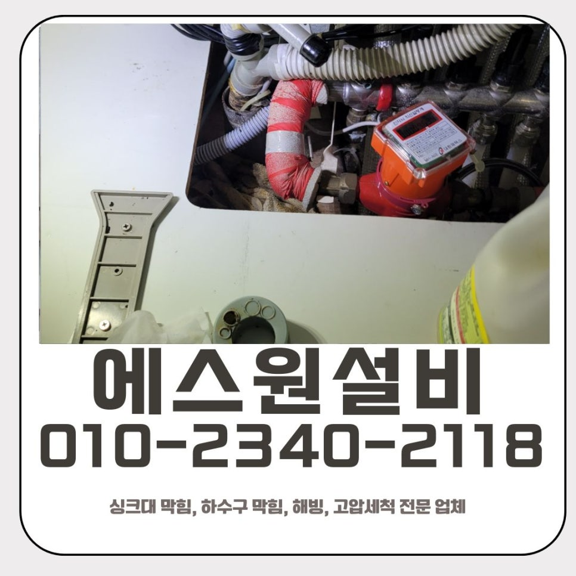
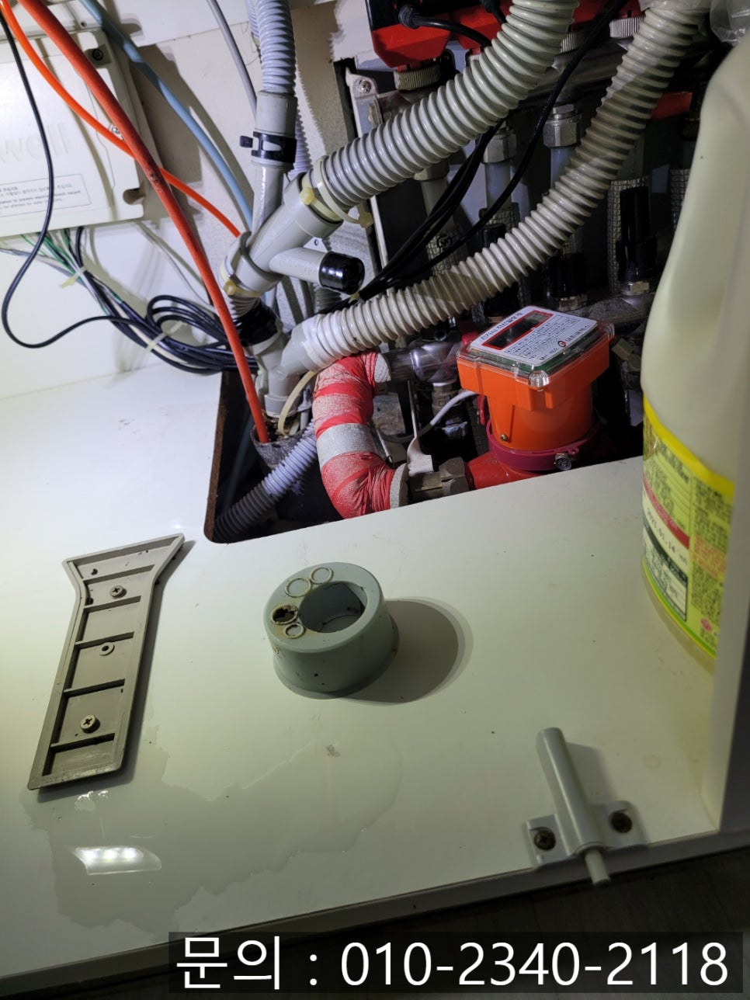
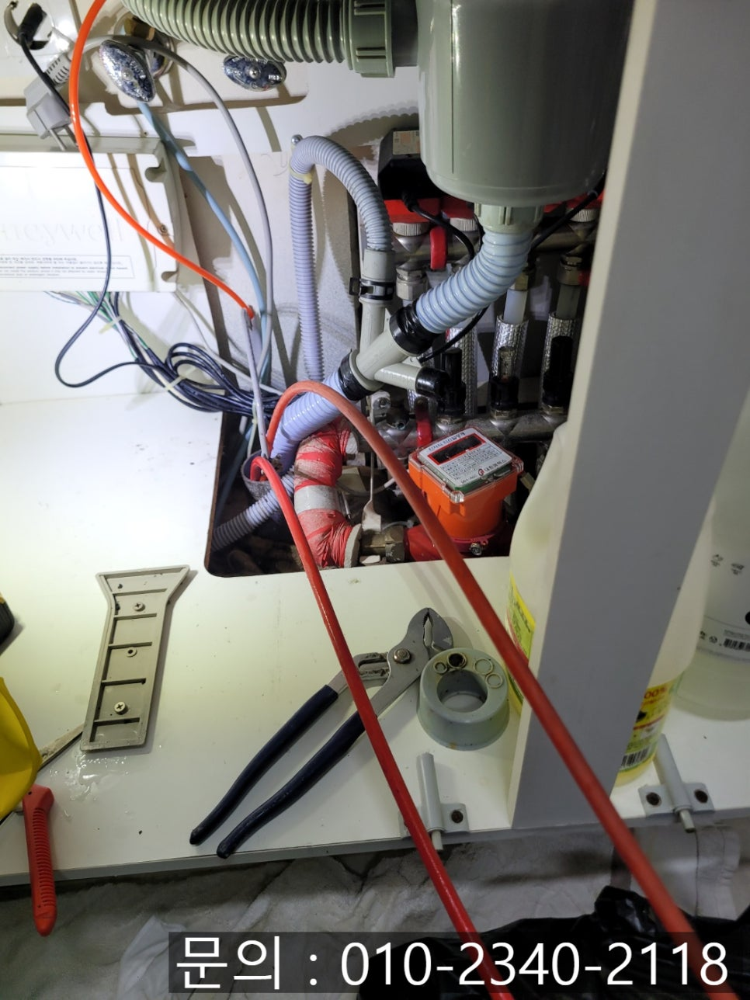
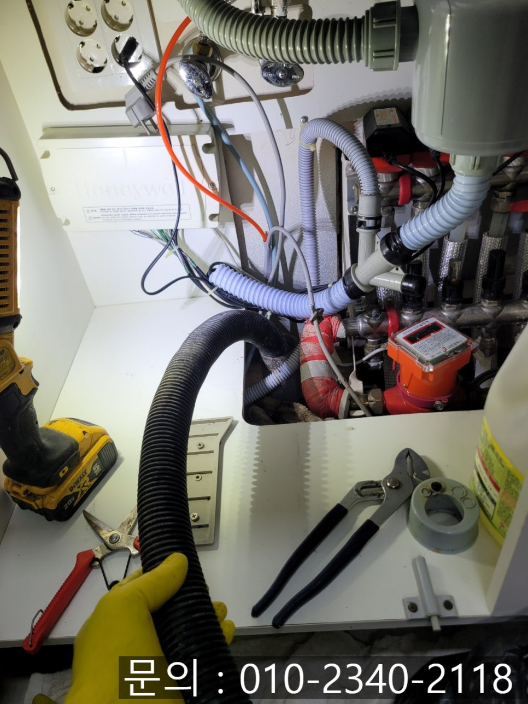
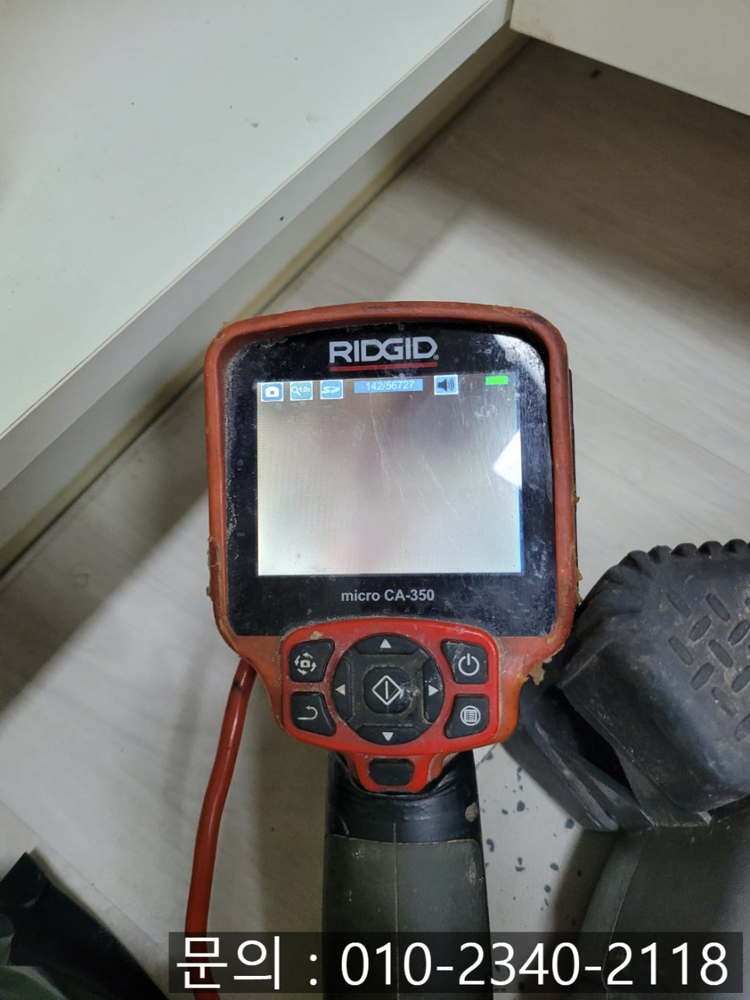
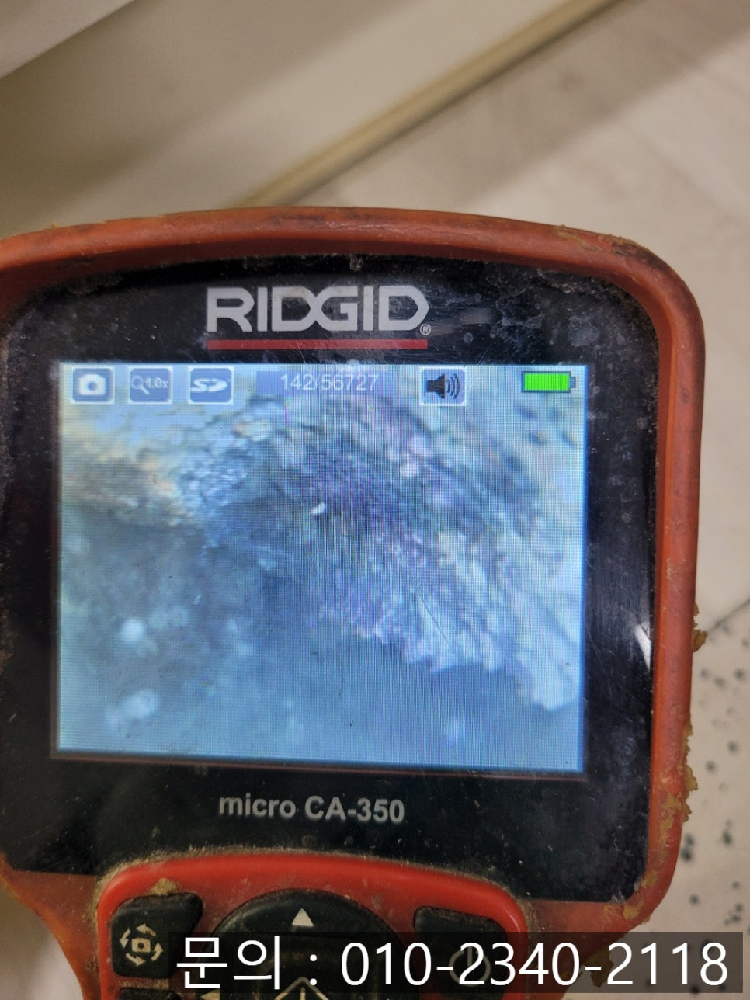
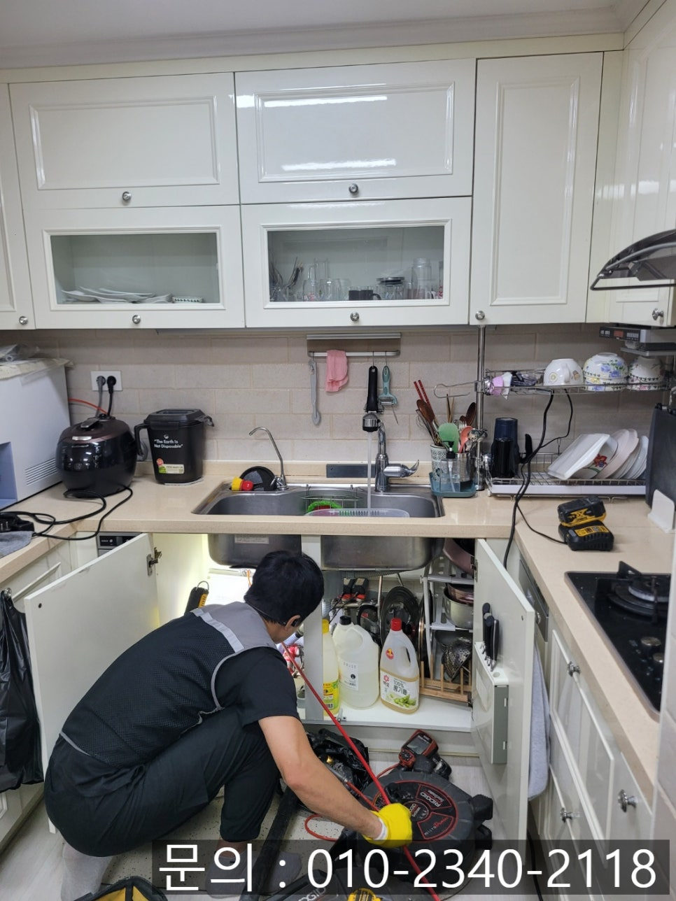

🏠 상현동 싱크대 막힘 용인 성복동 배수관 물 넘침 해결 업체
용인 처인구 싱크대막힘 전문 시공 후기

📋 작업 개요
- 위치: 용인 처인구, 처인구, 용인
- 서비스 유형: 싱크대막힘, 하수구막힘, 배관막힘, 역류해결, 뚫는업체, 배관청소, 고압세척
- 작업 일시: 2025. 9. 1. 12:40
- 업체명: 하수구수사대 (010-5615-2118)
🔍 문제 상황
안녕하세요.
용인 성복동 배수관 물 넘침 해결 업체 에스원 설비입니다.
싱크대 물이 콸콸콸 잘 내려가야 마음도 시원한데, 어느 날 갑자기 배수관이 말썽을 부리면 정말 당황스럽죠. "오늘 식기는 누가 세척을 대신해 주나요?" 싶을 정도입니다.

🔎 원인 분석
💡 전문가 진단: 정밀 진단 장비를 사용하여 슬러지의 고착 여부를 판명하고 타격/세척 작업을 실시했습니다.
주방 싱크대에서 물이 잘 안 내려가거나 역류한다면 불편함도 불편하지만, 위생문제도 매우 불쾌하게 느껴지게 됩니다. 오늘은 용인에 있는 한 가정집에서 진행한 상현동 싱크대 막힘 해결 과정을 소개해 드리려고 해요.
고객님께서는 싱크대가 완전히 막혀서 물이 전혀 내려가지 않아 고여있는 상태라고 하셨어요. 배수구 클리너나 세정제 등등 제품을 전부 사용해 봤는데 소용이 없다면서 SOS를 보내오셨어요. 사실 배수구 클리너 등은 일시적으로 효과가 있을 수 있지만, 오래된 기름때나 딱딱하게 굳은 찌꺼기가 배관 내부에 쌓여 있을 경우에는 금방 다시 막히게 되는 경우가 많죠.
상현동 싱크대 막힘 현장에 도착하자마자 배관 내시경을 사용하여 정확한 원인을 파악해 보려고 했어요. 하수구 배관 문제는 눈으로 보이는 부분만 보고는 정확한 원인을 알기 어려워요.
요즘 보면 일부 업체들은 검수도 하지 않고 무턱대고 청소부터 시작하는 경우가 많은데요. 겉으로는 막힘이 해결된 것처럼 보여도, 속에 남아있는 정확한 원인을 제대로 제거하지 못하면 어떻게 될까요? 답은 간단합니다. "다시 막힘 예약"으로 이어지는 것이죠. 에스원 설비는 항상 배관 내시경으로 정확한 원인을 확인하고 작업을 진행합니다.

🔧 작업 과정
내시경으로 확인한 결과, 내부는 음식물 찌꺼기와 기름때가 중간중간에 뭉쳐 배관을 막고 있었어요. 이 정도 막힘은 아무리 세정제를 부어도 해결이 안 되는 상태인 것입니다.
원인을 파악했으니 상현동 싱크대 막힘은 플렉스 샤프트 장비를 이용하여 내부 찌꺼기들을 긁어내면서 청소 작업을 진행하였어요. 샤프트 장비는 배관 내부에 유연하게 진입할 수 있으면서 강한 회전력으로 음식물 찌꺼기나 슬러지 등을 갈아내면서 작동하게 됩니다.
이 과정을 여러 차례 반복적으로 작업해 주니 금세 물길이 뚫리면서 배수가 원활하게 이루어지는 것을 확인할 수 있었어요. 실제로 싱크대에서 물을 충분히 흘려보내보면서 잘 내려가는지 점검했어요. 처음 방문했을 때 꽉 막혀서 내려가지 않던 물이 이제는 막힘이나 역류 없이 시원하게 잘 배수되는 것을 확인할 수 있었습니다.
또한 배관 내시경 카메라로 내부가 깨끗하게 청소되었는지 확인하는 과정도 잊지 않았어요. 기름때와 음식물 찌꺼기가 깨끗하게 제거되었고, 거의 새것 같은 모습으로 회복된 것을 확인할 수 있었어요.
고객님께도 비포 & 애프터 카메라 화면을 직접 보여드렸는데 속이 다 시원하다면서 매우 흡족해하셨어요. 사실 이런 확인 과정이야말로 용인 성복동 배수관 물 넘침 해결 업체인 에스원 설비의 전문성이라고 할 수 있죠.


✅ 작업 완료
싱크대 물이 잘 내려가지 않는다면 전문 업체의 도움을 받아 바로 조치하는 것이 가장 좋은 방법입니다. 언제든지 상현동 싱크대 막힘 문제로 고민이 생긴다면 편하게 연락 주세요.
경기도 용인시 처인구 중부대로1313번길 20-25 2층 202호 나21




⚠️ 주방 싱크대 배관 막힘 예방 수칙
- ✅ 기름기가 묻은 식기나 프라이팬은 설거지 전 키친타올로 반드시 기름때를 닦아내세요.
- ✅ 주기적으로 싱크대 개수대에 뜨거운 물을 가득 받아 한 번에 내려 배관 내부 기름을 씻어내세요.
- ✅ 배수구 거름망을 미세한 필터로 사용하시고 음식물 찌꺼기가 틈으로 새어 들지 않게 관리하세요.
- ✅ 베이킹소다와 식초를 뜨거운 물과 함께 일주일에 한 번씩 부어주면 배관 살균과 막힘 예방에 좋습니다.
💡 핵심 정리
- 확실한 장비 작업(내시경 점검 및 샤프트 스케일링)으로 원인을 뿌리 뽑습니다.
- 작업 후 1년 이내에 동일한 부위 재발 시 100% 무상 A/S 서비스를 보장합니다.
- 서울 · 경기 · 인천 전 지역에 24시간 언제든 긴급 출동할 수 있도록 항시 대기 중입니다.
❓ 자주 묻는 질문 (FAQ)
🚨 용인 처인구 싱크대막힘 문제로 고민이신가요?
정확한 원인 진단과 확실한 시공으로 재발 없는 해결을 약속드립니다.
24시간 긴급 출동 | 서울 · 경기 · 인천 전지역 | 1년 내 재발 시 무상 A/S